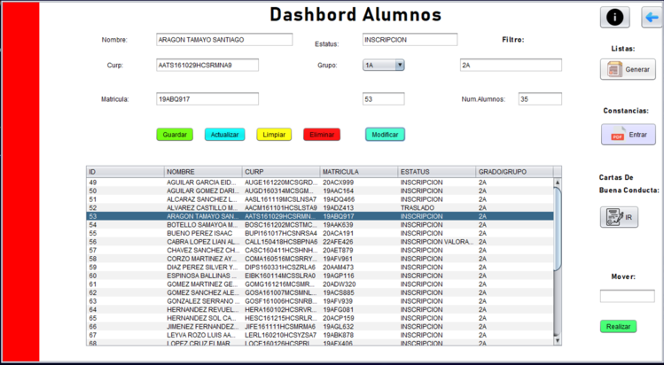
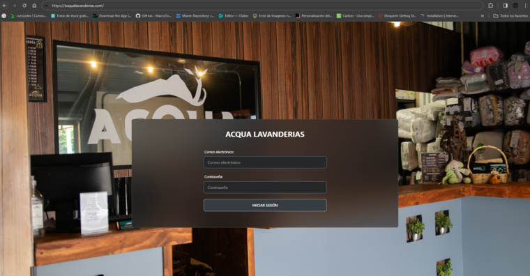
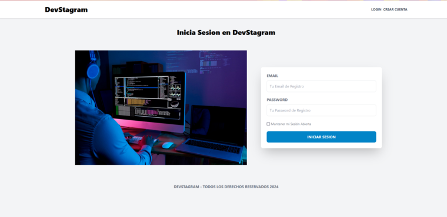

Hola Mundo, Mis Proyectos
Rosario Castellanos Software

Software Primaria
Rosario Castellanos Tuxtla
Este es unn software que elaboramos como residencia con un compañero
este proyecto fue hecho principalmente con Java y MariaDB
actualmente esta en uso en dicha primaria que esta en tuxtla gutierrez, Chiapas. Administra a
todos los alumnos asi como a todos los profesores y empleados de la primaria.
Genera los siguientes documentos:
- Constancias.
- Boletas.
- Reconocimientos.
etc

{kind=link}
Acqua Lavanderias

Acqua Lavanderias
Me contrato BitQuark
Este fue un proyecto un negocio que se dedica al lavado de ropas y otros servicios colabore en el resientemente como desarrollador Backend con el framework Laravel el FrontEnd lo hiso otro desarrollador con Angular actualemente este software esta en servicio.

{kind=link}
Devstagram

Proyecto Personal Devstagram
Es un pequeño clon de instagram que implemente con Laravel con algunas librerias de JS como DropZone y de php Intervention Image util para procesesar imagenes, todas las vistas fueron renderizadas con blade y en este caso para el diseño tambien tiene implementado Tailwind Css un Framework de Css bastante interesante y agil.

{kind=link}
App-Salon

Barberia
Una aplicacion web para poder agendar citas en una Barberia
es un proyecto que realice en un curso bastante interesante,
realizado con el patron de arquitectura MVC algunos
de los enpoints de esta app se comunican por medio de una API se realiso
con PHP para el Backend y Html, Css y JS para el FrontEnd
tambien se utiliso Gulp para automatizar un poco mas el trabajo del FrontEnd.
Barberia
Una aplicacion web para poder agendar citas en una Barberia es un proyecto que realice en un curso bastante interesante, realizado con el patron de arquitectura MVC algunos de los enpoints de esta app se comunican por medio de una API se realiso con PHP para el Backend y Html, Css y JS para el FrontEnd tambien se utiliso Gulp para automatizar un poco mas el trabajo del FrontEnd.
Visita mi - GitHub